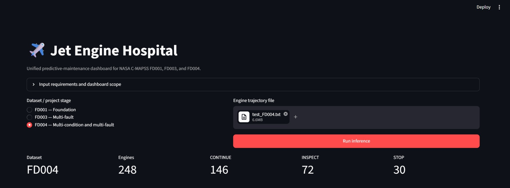

SELECTED WORK
Ideas turned into systems.
Machine learning, computer vision, graph algorithms, data science, and software projects.

Jet Engine Hospital
Predictive maintenance for NASA C-MAPSS engines.

Deep Image Restoration
Denoising, deblurring and CIFAR-10 classification.

Fraud Detection with PPR
Graph-based fraud detection using Personalized PageRank.
Telegram Clone
Real-time client-server messaging application with Java, JavaFX, PostgreSQL, sockets and multithreading.